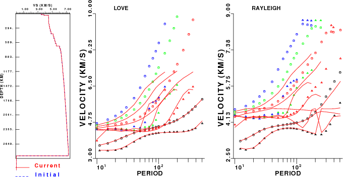
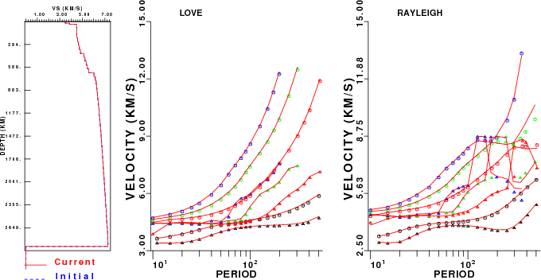
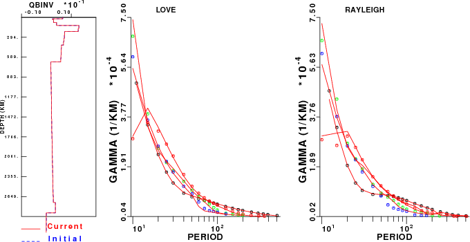
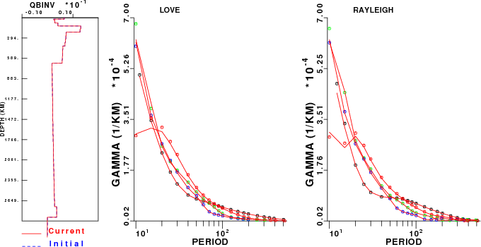

Earth flattening - surface-wave dispersion
Introduction
In 2004, David Harkrider investigated the appropriateness of the
Earth-flattening approximation by comparing the phase velocities from minos to those from his
plane-layer dispersion codes. To make the comparison easier, he
replaced the l order
parameter in minos by
a float, so that he could get the effective free oscillation dispersion
at periods such as 100 or 200 seconds. He restricted his
comparison to the dispersion for infinite-Q models
The objective here is to apply the concept of his comparison to the
same model and transformations used for the waveform comparison.
In doing we wish to check the flattening approximation used in the
dispersion inversion program surf96,
which is a newer version of David Russell's 1985 version. The
flattening approximation of Russell is based on the work of Schwab and
Knopoff (1972). The primary difference here is that we use the Biswas
(1972) density mapping (PAGEOPH 96, 61-74, 1972) and that we do not use
the average layer velocity of Schwab and Knopoff (1972) (Methods of
Computational Physics, Vol 12).
We use the surf96 program for
the comparison because that program permits the computation for the
effects of causal Q on the group velocity dispersion. We will also
compare the spatial attenuation values gamma.
The first step was to convert from the mineos output
n
t l
C(km/s)
f(mHz)
T(sec)
U(km/s) Q
0 s 999
3.277979
81.84677
12.21795
2.926002
185.5879 -0.4165177E-02
to the surf96 dispersion
format:
SURF96 R C X 0 12.21795 3.277979 0.0010
SURF96 R U X 0 12.21795 2.926002 0.0010
SURF96 R G X 0 12.21795 4.73508e-04 1.00000e-08
The conversion is straight forward. However to estimate gamma we use the Aki and Richard
(2002) definition (equations 7.03/7.04) to give gamma = pi / Q U T .
Because the surf96 code only
permits a fluid layer at the top of the model, we approximate the
effect of the liquid core by replacing the outer core with a single
layer with model96 parameters
47.8301 8.0191 0.0010 9.9543 0.578E+05 0.00 0.00 0.00 1.00 1.00
and then modified the surface-wave disperesion and inversion codes to
use that false S-velocity for the dispersion relation, but not to use
that low velocity in the root search. By adding this single layer, the
higher modes are fit better at the longer periods. This model is called
nntak135sph.mod.
The plane-layer dispersion computations do not account for
gravity. The free-oscillation computations include the effect of
gravity up to frequencies of 10.0 mHz. We did not check the effect for
higher frequencies.
Fri Dec 28 13:53:41 CST 2007: I modified srfdis96, srfdrl96, srfdrr96, sdisp96, sregn96 and slegn96 to permit a fluid core by
specifiying the shear-wave velocity in the core as 0.001 km/s. The
logic for selecting the phase velocity search window assumes that this
is a fluid and only uses the P-velocity as a guide. The test is made on
whether the transformed velocity is > 0.01 km/sec, e.g.,
do 20 i=1,mmax
if(b(i).gt.0.01 .and. b(i).lt.betmn)then
betmn = b(i)
jmn = i
jsol = 1
elseif(b(i).le.0.01 .and. a(i).lt.betmn)then
betmn = a(i)
jmn = i
jsol = 0
endif
if(b(i).gt.betmx) betmx=b(i)
20 continue
WRITE(6,*)'betmn, betmx:',betmn, betmx
The Love wave eigenfunction program ignores the low S-velocity, but the
boundary condition of a stress-free boundary is correctly
applied.
The advantage of this subterfuge is that the effects of a fluid core on
the Rayleigh dispersion can be seen.
To perform the comparison, I go to the directory
MINEOS/share/mineos1/nnDEMO6 (this appears when the MINEOS.tgz is
unpacked), create the free oscillation synthetics
RUN_MINEOS.sh tak135-f
then I run DOSEL to make the comparison, which polulates the
MINEOS/sahre/mineos1/HTML.SW with graphics, and finally I run
DOCLEAN to clean up the directory.
Using the command surf96 1 17
(17.txt) we can compare the observed (mineos)
dispersion (and the surface-wave
predicted dispersion with the current flattening model) at the long
periods:
Mode Period Observed Predicted
L C 0 301.7149963 5.2029619 5.2837887
L C 0 347.5029907 5.3578548 5.4408402
L C 0 392.8059998 5.5085521 5.5924311
L C 0 506.1719971 5.8580852 5.9402952
L U 0 301.7149963 4.3387032 4.4140792
L U 0 347.5029907 4.3883481 4.4704652
L U 0 392.8059998 4.4559240 4.5439758
L U 0 506.1719971 4.6907072 4.7881312
R C 0 297.7600098 5.2720690 5.3223057
R C 0 347.7680054 5.6149321 5.6543474
R C 0 407.5010071 5.9535398 5.9821863
R C 0 503.4719849 6.3606620 6.3766308
R U 0 297.7600098 3.7275290 3.8109736
R U 0 347.7680054 4.0285168 4.1075196
R U 0 407.5010071 4.4197330 4.4858279
R U 0 503.4719849 4.9883242 5.0503368
The interesting part of this comparison is that if we wish to fit
observations in the time domain to with 4 sec at a 90 degree epicentral
distance, we would require a
precision better than 4/ 4000, or 0.1%. The dispersion
comparison here shows deviations of 2%. Of course this
difference also reflects the use of the Schwab and Knopoff adjustment
factor of
c = c / tm
u = u * tm
where
tm = sqrt(1.+(3.*c/(2.*a*om))**2) [a is the
radius of the Earth and om is the angulat frequency] for Love
and
tm = sqrt(1.+(c/(2.*a*om))**2) for Rayleigh.
Note that the wavenumber integration synthetics do not have such a
factor!
Dispersion Comparison
We compute the dispersion for two models - the spherical model
with flattening, e.g., with the keyword SPHERICAL EARTH, and the same model
treated as a flat-Earth model, e.g., replacing the SPHERICAL EARTH keywork with FLAT EARTH in the file
nntak135sph.mod. The observed (mineos) and surf96 predicted dispersion are in
the file 17.txt.
No flattening
|
Flattening
|
|  |
 |
| Comparison of non-flattened
dispersion predictions (solid curves) to
free oscillation values (symbols). Phase velocity is indicated by
circle and the group velocity by a triangle. Modes: fundamental is
black, 1'st is red, 2'nd is green and 3'rd is blue. |
Comparison of Earth-flattening
dispersion predictions (solid curves) to free oscillation values
(symbols). Phase velocity is indicated by circle and the group velocity
by a triangle. Modes: fundamental is black, 1'st is red, 2'nd is
green and 3'rd is blue.
|
The difference in the use of flattening instead of no-flattening is
especially noticeable in the higher modes. At periods greater than 300
seconds, the differences are noticeable even in the fundamental mode.
Gamma Comparison
The observed (mineos) and surf96 predicted
gamma dispersion are in the file 12.txt.
No flattening
|
Flattening
|

|

|
| Comparison of non-flattened
gamma predictions (solid curves) to
free oscillation values (symbols). Modes: fundamental is
black, 1'st is red, 2'nd is green and 3'rd is blue. |
Comparison of Earth-flattening
gamma predictions (solid curves) to free oscillation values
(symbols). Modes: fundamental is black, 1'st is red, 2'nd is
green and 3'rd is blue. |
The results of the gamma
comparison indicates that the differences are small. One reason
is that the gamma is defines
as pi f / Q U T, and the
values are quite small at long period.
Last Changed February 4, 2008